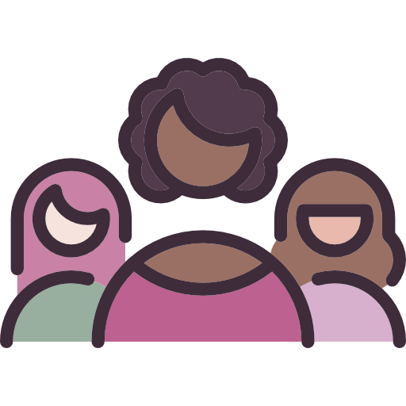
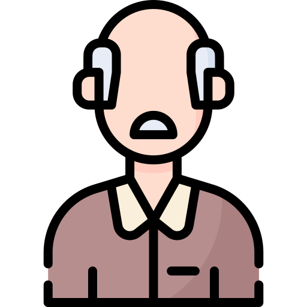

Ações
__
• LDB

A Lei de Diretrizes e Bases da Educação Nacional (LDB), implementada pela primeira vez em 1961, visa a organização do sistema educacional brasileiro. Também conhecida como Lei Darcy Ribeiro, a LDB 9394/96 é responsável por uma educação de qualidade para o ensino público ou privado no Brasil, do nível básico ao superior. Considerada a lei mais importante sobre a educação, ela permite a expansão de direitos educacionais, incluindo práticas mais inclusivas e didáticas. Também com uma pedagogia mais consciente, a LDB garante o direito e dever de educar, além de uma formação escolar crítica e de qualidade, tanto para os alunos quanto para os professores, seja da Educação Básica (Infantil, Fundamental, Médio) ou Ensino Superior.
• Cursinhos populares
.png)
Cursinhos populares são, em sua essência, a prática da democratização do acesso à educação para todos. Diversas organizações voluntárias se movimentam para ensinar alunos socialmente marginalizados, como alunos de baixa renda, de escola pública, negros, LGBTQIA+. Estes alunos, por causa da desigualdade político-socioeconômica, muitas vezes não têm acesso a um ensino crítico e de qualidade, por exemplo, para que possam realizar provas de seleção para instituições públicas, federais e/ou técnicas, como Colégio Militar (Ensino Fundamental), CEFET (Ensino Médio), COLTEC (Ensino Médio) e ENEM (Educação Superior). Então, cursinhos comunitários são uma forma de lutar contra essa desigualdade.
• Formação continuada

A formação continuada permite que os professores permaneçam aprimorando seus conhecimentos para atualizar seu ensino. Como profissionais que mantêm um contato direto com a transformação - dos estudantes, da sociedade e de si mesmos -, professores em formação continuada aprendem sobre novas metodologias de ensino, novas ferramentas tecnológicas e, acima de tudo, sobre novas culturas e realidades socioeconômicas dos jovens para os quais ensinam. Essa prática, respaldada pela LDB, se faz tão importante exatamente pelo fato de que a sociedade está sempre em constante mudança. Então, antenar professores com novas formas de ensino-aprendizado, tecnologias e atualidades é enriquecedor para a relação aluno-professor.
Na luta pela Educação
__
• Paulo Freire
.png)
Paulo Freire (1921-1997) lutou pela educação como um ato político e emancipador, no qual tanto o aluno quanto o professor possam juntos transformar o mundo por meio da prática reflexiva, crítica e transformadora. Educador, escritor e filósofo brasileiro, Paulo Freire escreveu “Pedagogia do Oprimido”, reconhecida como uma das obras mais trabalhadas mundialmente, e foi legalmente homenageado como Patrono da Educação Brasileira por meio da Lei 12.612/12.
• Macaé Evaristo

Macaé Evaristo luta pela educação pública brasileira de qualidade, pelo combate ao racismo, pela diversidade, inclusão e protagonismo dos jovens no ensino. Professora e política, defende também a educação das crianças e adolescentes, a causa indígena, a educação integral e os direitos das mulheres. Em 2015, Macaé Evaristo foi a primeira mulher negra a ocupar cargo de primeiro escalão no governo do estado, assumindo a Secretaria de Estado de Educação de Minas Gerais.
• Darcy Ribeiro

Darcy Ribeiro (1922-1997) foi defensor da causa indígena e da educação pública de qualidade do Brasil. O antropólogo, sociólogo, escritor e educador brasileiro entrou para a Academia Brasileira de Letras, participou da criação dos Centros Integrados de Educação Pública (CIEPs), foi redator do projeto do parque indígena do Xingu, fundou e foi reitor da Universidade de Brasília (UnB) e participou da criação da LDB, conhecida como Lei Darcy Ribeiro.
• Malala
.png)
Malala é mundialmente conhecida por lutar pela educação para mulheres em seu país, Paquistão, desde os 15 anos. Aos 17, a ativista se tornou a pessoa mais jovem a ganhar o Prêmio Nobel da Paz. Em 2013, seu livro foi publicado, "Eu sou Malala: A história da garota que defendeu o direito à educação e foi baleada pelo Talibã", e se formou em 2020 pela universidade de Oxford. Hoje, com 23 anos, Malala continua estudando e defendendo o direito à educação.